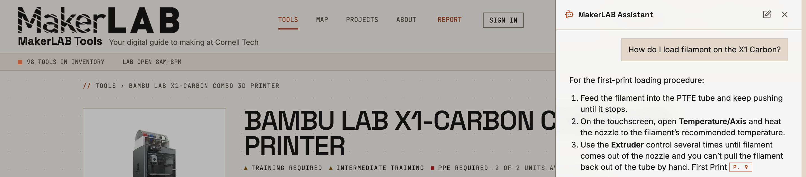
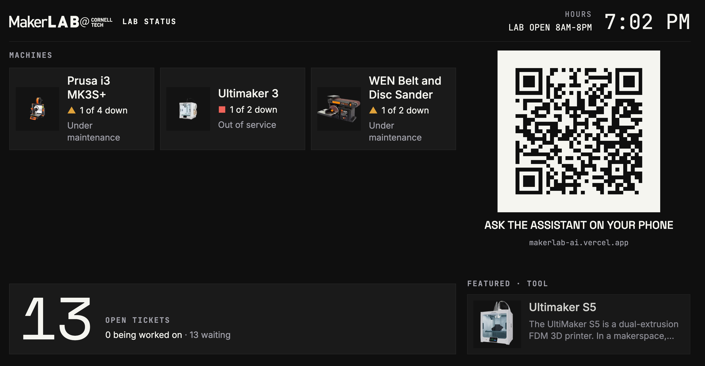
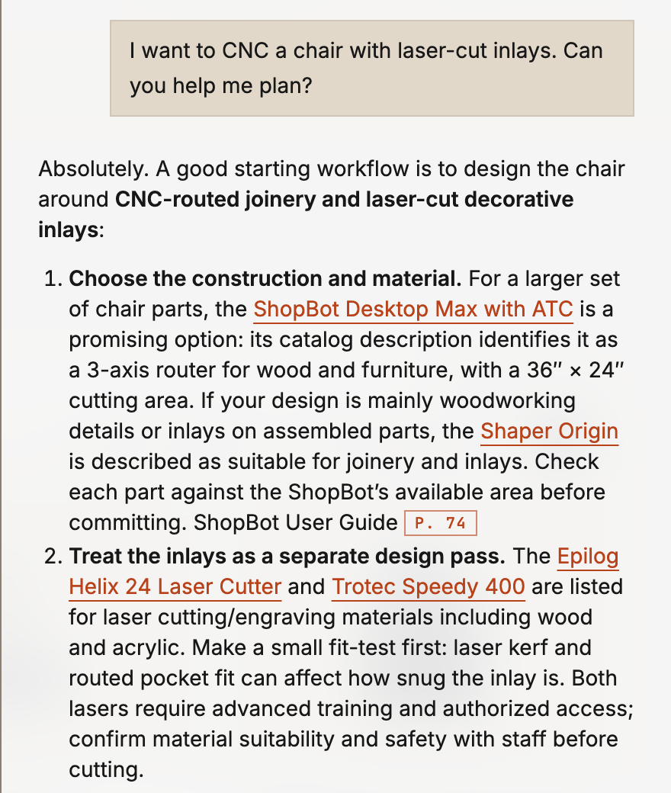

International Symposium on Academic Makerspaces — ISAM 2026
1Isaac Steinberg; MBA ’26, Johnson Cornell Tech; ies22@cornell.edu
2Niti Parikh; Director, Learning Spaces & MakerLABs, Cornell Tech; ntp27@cornell.edu
3Miguel Ramirez Peraza; MakerLAB Intern, Cornell Tech; ramirezperazamiguel@gmail.com

Abstract—Academic makerspaces run on operational knowledge (manuals, setup procedures, safety rules, inventory and repair history) that sits in shared drives, equipment websites and staff memory, mostly in English. At the Cornell Tech MakerLAB, students arrive at every skill level and staff are not always on the floor, so that knowledge reaches them unevenly. We ask whether an AI grounded in a lab’s own inventory and records can help students operate machines, debug them, and create multi-machine builds. The assistant answers questions, records issues and organizes inventory for pennies, freeing staff to work on larger projects and help more students. We demonstrate MakerLAB AI, the assistant inside MakerLAB Tools, a web platform, its code public, in use at the lab. Its answers cite the lab’s catalog and a searchable archive of about 50 machine manuals (≈2,400 pages), down to the page. Students troubleshoot from the official product manuals, and the AI proactively offers to file a maintenance ticket from the chat. Staff add equipment from an unstructured note, a photo or a list. In the background, research agents identify the tool and curate a record, downloading its documents; nothing is published until a person approves it. Printed QR labels make each machine its own entry point: scanning one opens that machine’s page, manuals and assistant. A kiosk shows live machine status, a projects gallery links student work to the machines that made it, and an insights page reports anonymous usage. Built AI-first, the catalog, manuals and everyday actions are also served over the Model Context Protocol (MCP), so visitors can use the lab from their own AI client. The interface is available in multiple languages, and the assistant answers in the student’s preferred language.
The project began on the Cornell Tech MakerLAB floor. An intern built the first inventory search; a student volunteer “SuperMaker” kept hunting down manuals to fix the laser cutters and 3D printers; the Director asked whether a student could describe a project and have an AI help plan it. The same three needs keep coming up, and today each one goes to a person: to operate a machine (where is it, how do I start, what training and PPE?), to debug it when it faults mid-job, and to create: plan a build across several machines. Our question is whether one assistant, grounded in the lab’s own records rather than the open web, can meet all three at any hour, and what guardrails make that trustworthy enough to be a useful and safe tool.
From research to records. MakerLAB Tools [4] (Next.js on Vercel, live at makerlab-ai.vercel.app; overview at /product) turns what the AI researches into structured records. It keeps tools, individual units, locations, resources, maintenance tickets and projects in Postgres with file storage, and can mirror them one way to Notion, where our staff already work (optional). Each of about 100 tool pages shows training, PPE, location, manuals and SOPs, and every unit’s status.
Grounded answers. This is retrieval-augmented generation (RAG), automated end to end: manuals and SOPs are archived, their text extracted (scanned PDFs are read with OCR), split into passages and indexed for hybrid keyword-and-vector search with reranking. The assistant searches them and cites the page it used (Fig. 1); when nothing supports an answer, it says so and sends the student to staff for safety and sign-offs. Opened on a tool page, the chat context starts from that machine’s record and manuals.
Acting, with a person in the loop. Students describe a problem in plain language; the AI asks what it needs to file a repair ticket against the right unit, and walks them through the fix when the manual covers it. Tickets go to the staff queue; a wrong answer can be reported from the chat as a correction. Staff add inventory at scale, from a photo or a pasted list: the model identifies each item, background research gathers manuals, specifications and a product image (a deterministic cutout, never a generated redraw), and a staff member approves each draft before it is published. Research, photo clean-up and manual indexing run as durable workflows (Vercel Workflow), checkpointed and retried, so long AI jobs survive timeouts without redoing work or duplicating records. The assistant is offered exactly what the signed-in user could do in the interface, but never acts itself: it shows a confirmation card drawn from the database, and nothing changes until the person presses Confirm. Irreversible changes require typing the item’s name, and after reading outside text (a web page, a manual, a ticket) the server, not the prompt, refuses changes to people or anything irreversible.
Starting from the machine. Staff print QR labels from the inventory page, singly or by the sheet; a label opens that tool’s page with its manuals and the assistant, and a phone photo of a label in the chat is decoded on the server, so the assistant knows which machine a student is standing at. Without a label, it matches a photo of the machine itself to the catalog, asking when look-alikes are ambiguous. For signed-in students a floor map shows where each tool is, and a project page lights up the zones its tools are in, so a build can be planned as a walk through the lab.
Public dashboard. A full-screen kiosk (Fig. 2) shows down machines, open tickets, hours and a QR code that opens the assistant on a visitor’s phone. At the front of the MakerLAB it engages students as they walk in, tells them which machines are up, and introduces the assistant.

The system is built spec-first: each feature starts as a written design with open questions for the engineer and ships with automated tests (about 6,800, run on every change). Chat and research use OpenAI’s GPT-6 Luna, with text-embedding-3-small embeddings and Cohere Rerank v4 Fast, through the Vercel AI Gateway. Model behavior is checked by an evaluation harness of 72 conversational cases (the three needs, citations, honest “I don’t know” replies, staff actions, refusing unsafe changes). In a spot check of ten student questions on 30 Sep, eight got a complete, correct answer (four citing a manual page) and two were partial where the records lack the data (plywood settings, PPE); none was unsafe. Costs are in cents: about 0.25¢ for a chat turn that searches a manual (most of it the reranker), 2–5¢ to research a new tool, and 1.3¢ to index 20 manuals. Fig. 3 shows a create answer.

Visitors use the live system at three stations. Browse and ask (laptop): they browse the inventory, open a machine page, and ask the assistant how to operate, debug or fix it, or how to make something with the lab’s machines; answers cite the manual page, and a printed QR label on a sample tool opens its page. Bring your own AI (second laptop): Claude [2] or ChatGPT [3], connected to the MCP [1] endpoint, searches the same inventory and manuals from outside the site. Add to the inventory (phone): in a demo copy of the app, they photograph an object and watch it become a researched draft awaiting approval. The kiosk runs on a TV throughout, on live lab data. Requirements: one table, power, reliable Wi-Fi, and a monitor or TV.
The assistant is deployed; its effect on students is not yet measured. Anonymous usage counting began on 28 Sep 2026, and its first days are our own testing. The insights page logs what is asked, what goes unanswered and when; this term we will compare ticket volume, machine downtime and after-hours questions against staff estimates. Limits: answers are only as good as the archived manuals, many of which are thin on troubleshooting. Next: AI planning for digital fabrication across the lab’s machines, recurring maintenance, notifications, and a framework other labs can adopt.
We thank the MakerLAB staff, the SuperMakers and interns at Cornell Tech and Cornell University, and the students who make the lab. Use of generative AI (ISAM policy): Isaac Steinberg designed and architected the system and directed and reviewed all of its code, which was written with the AI coding assistants Claude Code (Anthropic) and Codex (OpenAI). This abstract was drafted and revised with Anthropic’s Claude from the authors’ notes and the project’s specifications; the authors checked each claim and figure against the running system. The answers in Figs. 1 and 3 are unedited output of the deployed assistant (commercial models via the Vercel AI Gateway).
[1] Anthropic, “Model Context Protocol,” 2024. [Online]. Available: https://modelcontextprotocol.io. [Accessed: Sep. 28, 2026].
[2] Anthropic, “Claude,” 2023. [Online]. Available: https://www.anthropic.com/claude. [Accessed: Sep. 28, 2026].
[3] OpenAI, “ChatGPT,” 2022. [Online]. Available: https://openai.com/chatgpt. [Accessed: Sep. 28, 2026].
[4] I. Steinberg, “MakerLAB Tools,” GitHub repository, 2026. [Online]. Available: https://github.com/philosophercode/makerlab-tools. [Accessed: Sep. 28, 2026].